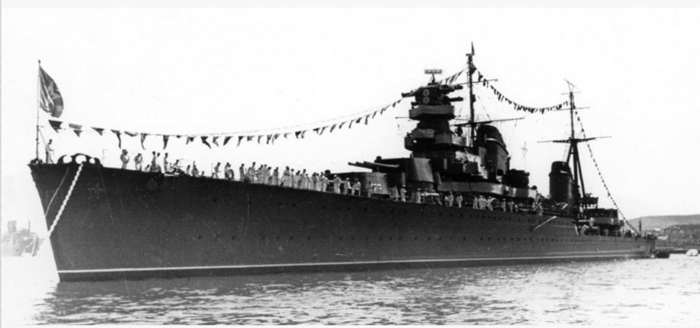
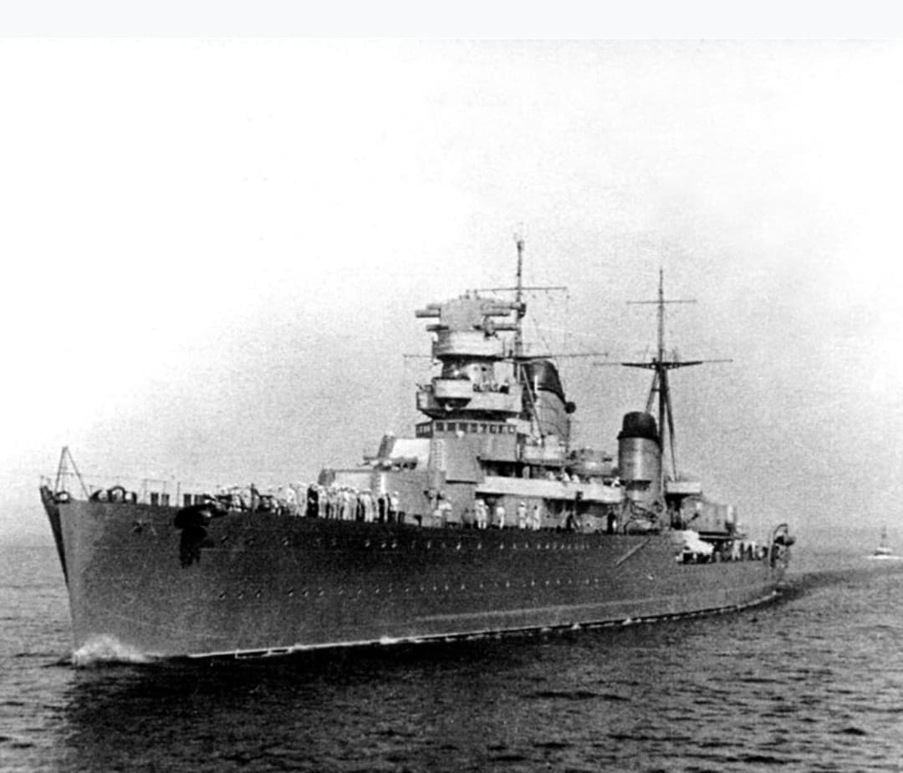
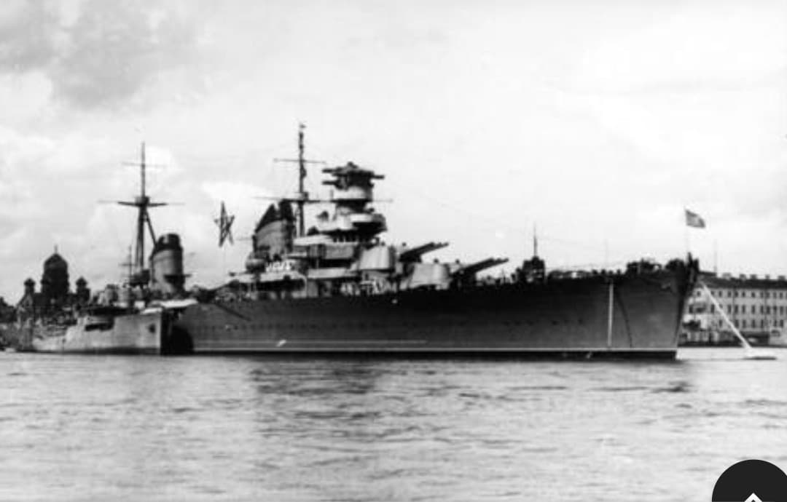

L'évolution perfectionnée de la classe Kirov avec blindage et conduite de tir renforcés

Le Maxim Gorky est le navire éponyme de la série Projet 26bis, version révisée du croiseur Kirov. Mis en service en 1940, il bénéficiait d'une ceinture blindée épaissie à 70 mm et d'un calculateur de tir national de pointe (*Molniya*).
Sa mâture modernisée et son pont étanche renforcé lui assuraient une meilleure protection contre les attaques aériennes et le tir des batteries ennemies.

Dès le deuxième jour de l'invasion, la proue du *Maxim Gorky* fut arrachée par une mine navale. Remorqué et équipé d'une nouvelle proue construite à Léningrad, le navire délivra plus de 2 300 obus lourd contre les troupes allemandes assiégeantes.

Récompensé par le Drapeau rouge, le croiseur participa activement à l'offensive qui brisa le blocus de Léningrad en janvier 1944.
Page du Musée HOP WW2 – Section Marine Soviétique